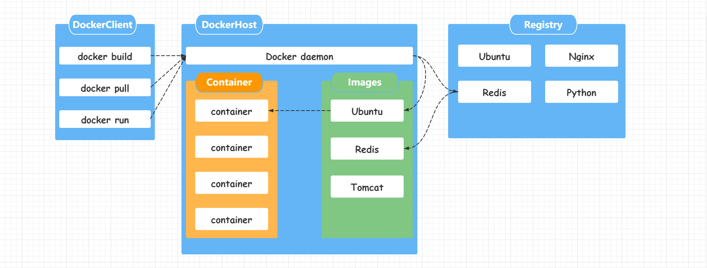
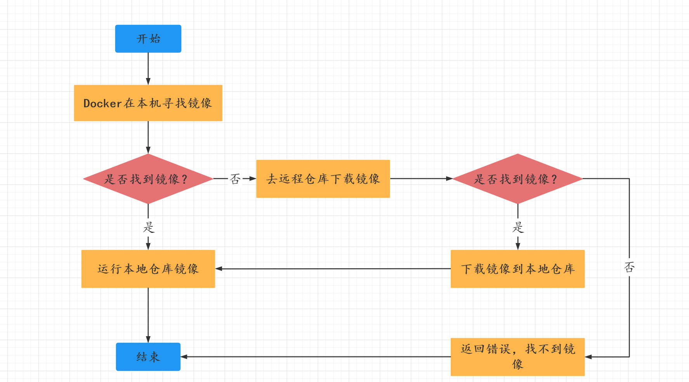
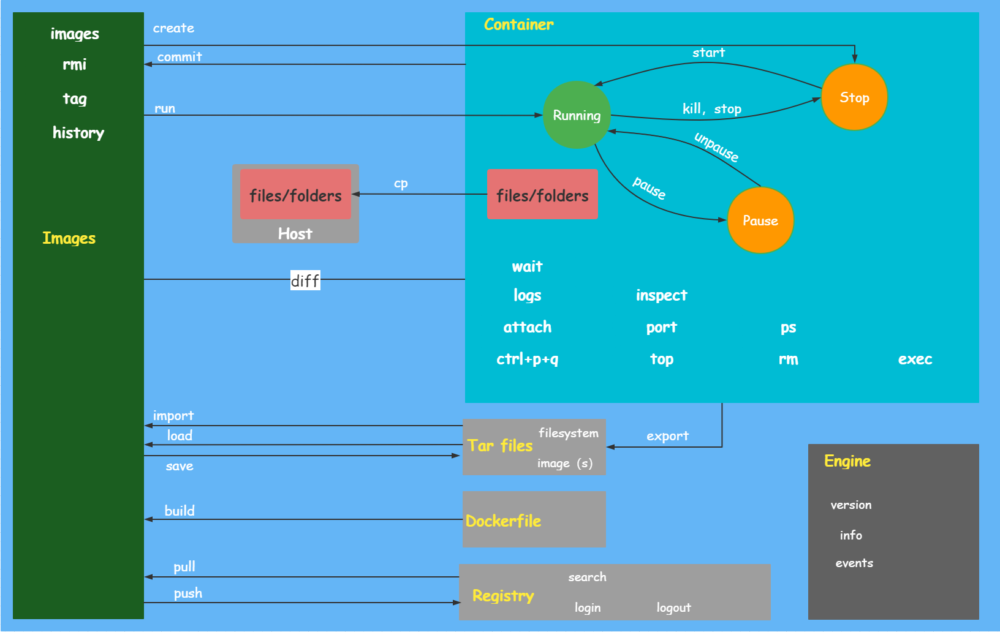
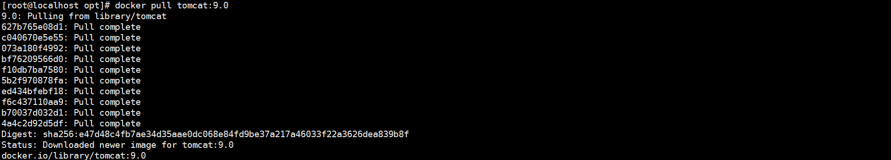
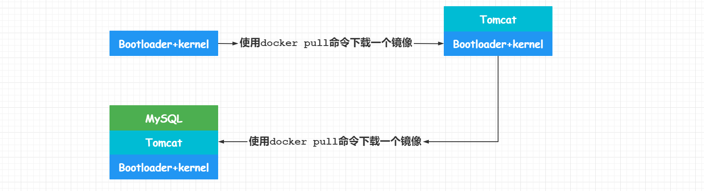
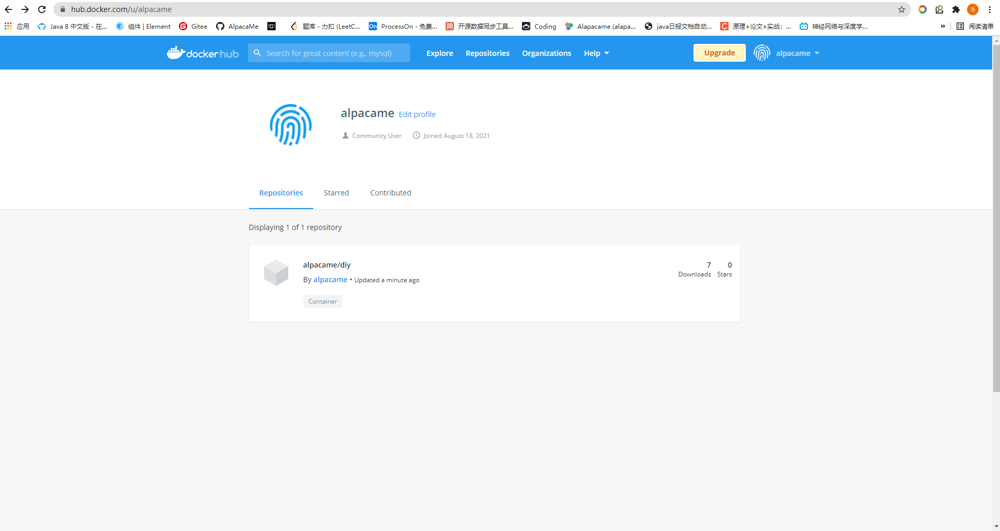
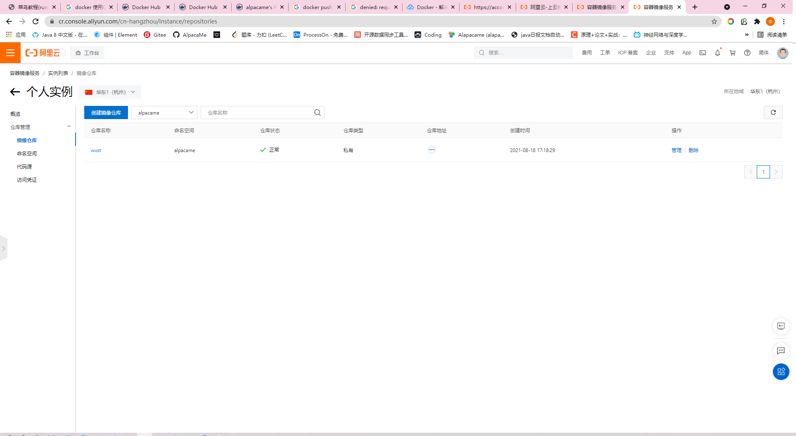
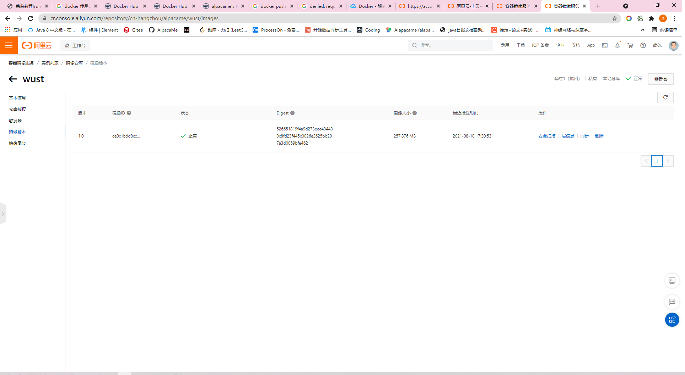
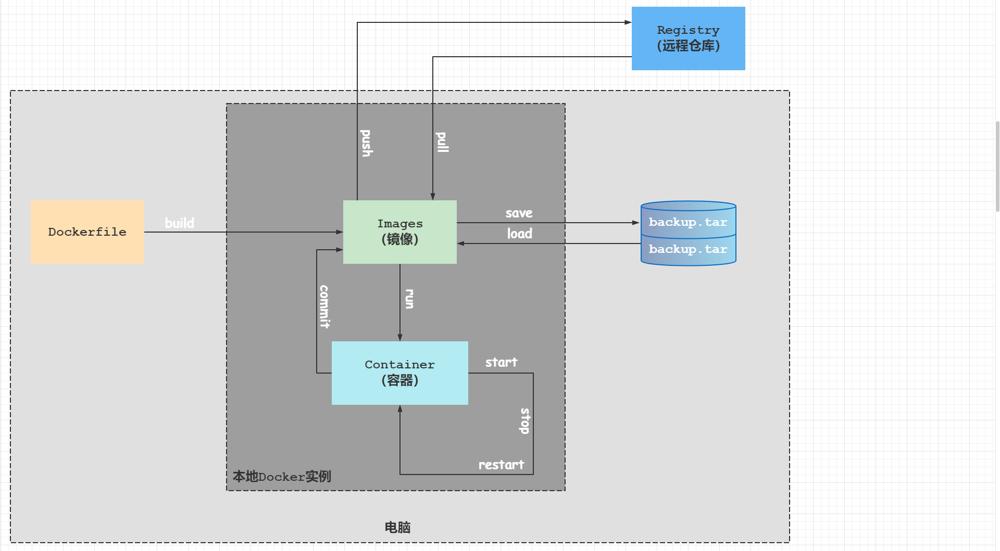
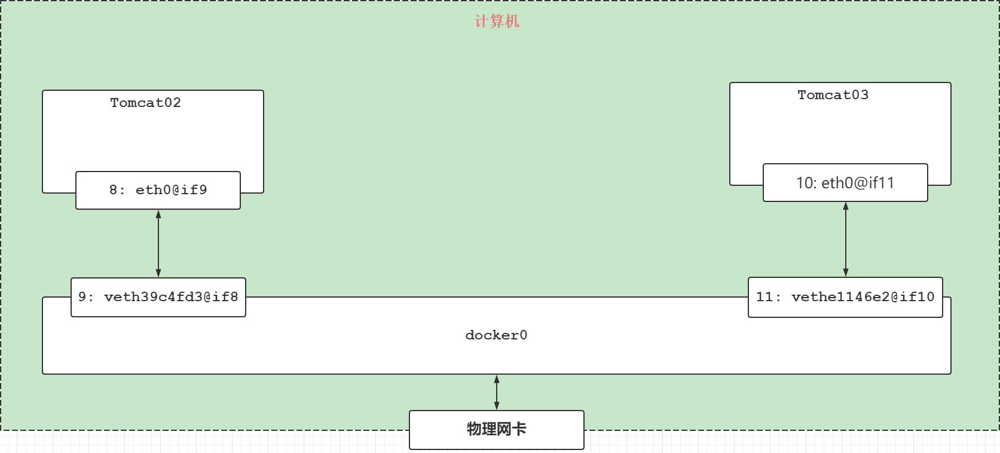

Docker
Docker
Docker是一种新兴的虚拟化容器技术。在传统的项目中，我们部署项目需要将环境搭建好，然后运行jar包即可启动Java应用。但是在很多的时候搭建环境是非常复杂的一件事情，而且这种部署方式带来的弊端就是：假如在多个计算机都需要运行这个微服务实例，那么如何去保证多个计算机中的Java应用环境的一致性？
类似的好比Android开发：Android开发 ==> 打包成APK ==> 发布到应用商店 ==> 用户下载即可运行。
开发者们希望Java应用也能像这样打包成一个带有环境+jar包的文件，在任何人拿到之后只需要运行即可。这样即使在任何一台计算机上都能保证环境的一致性。而这个带有环境+jar包的文件在就会在Docker中进行运行，而Docker也就相当于应用商店，这个带有环境+jar包的文件就相当于APK。
Docker简介
Docker是dotCloud公司创始人Solomon Hykes在发过期间发起的一个公司项目，它是基于dotCloud公司多年云服务技术的一次革新。在2013年3月以Apache 2.0授权协议开源，主要项目代码在Gtihub上进行维护。Docker是基于Go语言书写的，基于Linux内核的cgroup，namespace以及OverlayFS类的Union FS技术，对进程进行封装隔离，属于操作系统层面的虚拟化技术。
与我们常用的虚拟化技术——虚拟机相比，Docker与虚拟机在以下几点上有很大的不同：
- 虚拟机依赖的是物理CPU和内存；Docker是构建在操作系统层面的，利用操作系统的容器化技术，所以Docker同样可以运行在虚拟机上
- 虚拟就就像是独立的操作系统，比较复杂；Docker比较轻量级，可以用Docker部署一个独立的Redis，就类似与在虚拟机中安装可一个Redis应用，但是我们用Docker部署的应用是完全隔离的
- 传统的虚拟机技术是使用快照的方式来保存状态的；而Docker引入了类似源码管理机制，将容器快照的历史版本一一记录下来，切换成本比较低
- 传统的虚拟化技术在构建系统的时候非常麻烦；而Docker可以通过一个简单的Dockerfile文件来构建整个容器，更重要的是Dockerfile可以手动编写，开发人员可以通过Dockerfile来定义应用的环境和依赖，利于持续的交付。
Docker带来的好处
- 更高效的利用系统资源
- 更快的启动时间
- 一致的运行环境
- 持续交付和部署
- 更轻松的迁移
- 更轻松的维护和扩展
Docker安装
Docker的组成

镜像（Image）
docker镜像就好比是一个模板，可以通过这个镜像创建容器服务，例如：tomcat镜像==> run ==> tomcat1容器（提供服务）
容器（Container）
Docker利用容器技术，独立运行一个或者一组应用，通过镜像来创建。容器具备启动、停止、删除等基本命令，相当于一个微型的操作系统
仓库（Registry）
仓库就是存放镜像的地方，通常分为私有仓库和公有仓库，常见的公有仓库有Docker Hub、阿里云等等。（类似Maven的私有仓库和公有仓库）在国内默认用的Docker Hub，而Docker Hub在国外，使用国内的镜像仓库通常需要使用配置加速服务。
Cetenos安装Docker
Cetenos安装Docker是非常件简单的，直接使用yum安装工具即可。需要注意的是安装Docker的Cetenos内核版本必须在3.10以上。以下操作步骤是Vmware+Xshell的组合操作虚拟机完成的，使用都是root用户下的操作，如果不是需要用sudo切换到root权限下操作。
查看系统内核版本
[root@localhost ~]# uname -r 3.10.0-1160.el7.x86_64更新yum
yum -y update也可以不更新，但是出现不兼容的情况下就必须要更新了。
安装必须的软件包yum-util
yum install -y yum-utils设置安装的源为阿里云镜像源，否则会默认使Docker Hub，下载起来会比较慢
yum-config-manager -add-repo http://mirros.aliyun.com/docker-ce/linux/cetenos/docker-ce.repo现在就可以直接安装Docker了
yum install docker-ce docker-ce-cli containerd.io验证docker是否安装成功
# 首先启动docker服务 systemctl start docker # 使用docker命令验证docker是否安装成功 docker version出现以下内容则表示安装成功：
Client: Docker Engine - Community Version: 20.10.8 API version: 1.41 Go version: go1.16.6 Git commit: 3967b7d Built: Fri Jul 30 19:55:49 2021 OS/Arch: linux/amd64 Context: default Experimental: true Server: Docker Engine - Community Engine: Version: 20.10.8 API version: 1.41 (minimum version 1.12) Go version: go1.16.6 Git commit: 75249d8 Built: Fri Jul 30 19:54:13 2021 OS/Arch: linux/amd64 Experimental: false containerd: Version: 1.4.9 GitCommit: e25210fe30a0a703442421b0f60afac609f950a3 runc: Version: 1.0.1 GitCommit: v1.0.1-0-g4144b63 docker-init: Version: 0.19.0 GitCommit: de40ad0卸载docke
# 卸载docker yum remove docker-ce docker-ce-cli containerd.io # 删除资源文件 rm -rf /var/lib/docker rm -rf /var/lib/containerd
运行hello-world镜像
在官网有一个Hello World的示例，在示例中演示了镜像的使用方式。
# 运行hello-world
docker run hello-world第一次运行的时候会出现以下的内容
latest: Pulling from library/hello-world
b8dfde127a29: Pull complete
Digest: sha256:0fe98d7debd9049c50b597ef1f85b7c1e8cc81f59c8d623fcb2250e8bec85b38
Status: Downloaded newer image for hello-world:latest
Hello from Docker!
This message shows that your installation appears to be working correctly.
To generate this message, Docker took the following steps:
1. The Docker client contacted the Docker daemon.
2. The Docker daemon pulled the "hello-world" image from the Docker Hub.
(amd64)
3. The Docker daemon created a new container from that image which runs the
executable that produces the output you are currently reading.
4. The Docker daemon streamed that output to the Docker client, which sent it
to your terminal.
To try something more ambitious, you can run an Ubuntu container with:
$ docker run -it ubuntu bash
Share images, automate workflows, and more with a free Docker ID:
https://hub.docker.com/
For more examples and ideas, visit:
https://docs.docker.com/get-started/可以看到Docker在运行hello-world镜像的时候会发现在本机上并没有对应的镜像，因此就会去远程的Docker仓库中进行下载。因为配置了阿里云镜像仓库，所以会去阿里云镜像仓库中下载对应的镜像。
docker run命令的执行机制

Docker的常用命令
通用命令
docker version显示docker的版本信息docker info显示docker的系统信息，包括镜像和容器的数量docker --help显示docker的所有命令以及用法解释，可以去帮助文档
镜像命令
docker images查询当前的镜像信息，通常还可以使用一些可配置的选项# 查看当前所有的镜像 docker images # 输出如下 REPOSITORY TAG IMAGE ID CREATED SIZE hello-world latest d1165f221234 5 months ago 13.3kB # REPOSITORY表示镜像的仓库源 # TAG表示镜像的标签 #IMAGE ID表示镜像的唯一标识 # CREATED表示镜像创建时间 # SIZE表示镜像的大小假如记不清docker images命令的可选项而且可以组合起来使用，也可以使用
docker images --help命令来查看可选项以及它的解释# 查看可选性及其解释 docker images --help # 输出如下 # docker images 命令的使用形式 Usage: docker images [OPTIONS] [REPOSITORY[:TAG]] List images Options: -a, --all 查看所有的镜像 (缺省情况下的默认选项) --digests 显示digests信息 -f, --filter filter 通过条件过滤镜像 --format string 使用GO语言的模板来显示镜像的信息 --no-trunc 不要截断输出 -q, --quiet 只显示镜像的唯一标识IDdocker search查找镜像# 搜索mysql相关的镜像[root@localhost ~]# docker search mysqlNAME DESCRIPTION STARS OFFICIAL AUTOMATEDmysql MySQL is a widely used, open-source relation… 11273 [OK] mariadb MariaDB Server is a high performing open sou… 4279 [OK] mysql/mysql-server Optimized MySQL Server Docker images. Create… 836 [OK]percona Percona Server is a fork of the MySQL relati… 549 [OK] phpmyadmin phpMyAdmin - A web interface for MySQL and M… 295 [OK] centos/mysql-57-centos7 MySQL 5.7 SQL database server 91 # NAME表示搜索到的镜像的仓库源# DESCRIPTION表示搜索到镜像的秒数# START表示搜索到的镜像点赞数# OFFICIAL表示是否是官方发布的# AUTOMATED表示是否是自动构建的docker search也是拥有可选项，并且可选项也可以组合起来使用。查看方式与docker images一样，在命令后面添加 –help的可选项即可
[root@localhost ~]# docker search --helpUsage: docker search [OPTIONS] TERMSearch the Docker Hub for imagesOptions: -f, --filter filter 通过一些条件去过滤查询到的镜像 --format string 使用 Go 模板进行漂亮打印搜索 --limit int 最大搜索结果数（默认 25） --no-trunc 不要截断输出查询STARTS大于3000的MySQL相关的镜像：
[root@localhost ~]# docker search --filter STARS=3000 mysqlNAME DESCRIPTION STARS OFFICIAL AUTOMATEDmysql MySQL is a widely used, open-source relation… 11273 [OK] mariadb MariaDB Server is a high performing open sou… 4279 [OK]查询START大于500并且是官方版本的MySQL相关镜像：
[root@localhost ~]# docker search --filter stars=5000 --filter is-official=true mysqlNAME DESCRIPTION STARS OFFICIAL AUTOMATEDmysql MySQL is a widely used, open-source relation… 11273 [OKdocker pull下载镜像# 下载MySQL镜像[root@localhost docker]# docker pull mysqlUsing default tag: latest # 假如我们不添加tag，默认就是下载最新的版本latest: Pulling from library/mysql33847f680f63: Pull complete # 分层下载，docker images 的核心，联合文件系统5cb67864e624: Pull complete 1a2b594783f5: Pull complete b30e406dd925: Pull complete 48901e306e4c: Pull complete 603d2b7147fd: Pull complete 802aa684c1c4: Pull complete 715d3c143a06: Pull complete 6978e1b7a511: Pull complete f0d78b0ac1be: Pull complete 35a94d251ed1: Pull complete 36f75719b1a9: Pull complete Digest: sha256:8b928a5117cf5c2238c7a09cd28c2e801ac98f91c3f8203a8938ae51f14700fd # 签名信息，防伪标识Status: Downloaded newer image for mysql:latest docker.io/library/mysql:latest # 真实地址下载指定的版本的MySQL：
[root@localhost docker]# docker pull mysql:5.7这个版本信息是不可以随便乱写的，可以在Docker Hub中进行查找，然后在Supported tags and respective Dockerfile links选项中看到可已选择的版本。
因为我们在下载latest版本的MySQL的时候下载过了很多的依赖，然后在下载MySLQ:5.7的时候不用下载所有的依赖，已经存在就不再去下载。这就是分层下载带来的好处，极大的节省了空间，高度的资源共享。
docker rmi删除镜像[root@localhost docker]# docker rmi --help # docker rmi命令的使用形式 Usage: docker rmi [OPTIONS] IMAGE [IMAGE...] # 作用是删除一个或者多个镜像 Remove one or more images Options: -f, --force 强制删除镜像 --no-prune 不要删除未标记镜像的分层删除mysql镜像
[root@localhost docker]# docker rmi --f mysql删除多个镜像
[root@localhost docker]# docker rmi --f mysql hello-world删除所有的镜像
# 查询出所有的镜像信息，然后递归的删除所有的镜像 [root@localhost docker]# docker rmi --f -$(docker images -aq)
容器命令
有了镜像才可以创建容器。
docker run创建一个容器，并启动# docker run的可选项非常的多，以下只介绍常用的 --name="Name" 容器的名称，用于区分容器 -d 后台的方式启动容器 -it 使用交互方式运行，进行容器查看内容 -p 指定容器端口与主机端口的映射 -p ip:主机端口：容器端口 -p 主机端口：容器端口 -p 容器端口 -P 随机指定一个端口使用Centos镜像来测试docker run的相关可选项：
# 首先将Cetenos最新的镜像下载到本地 [root@localhost docker]# docker pull centos Using default tag: latest latest: Pulling from library/centos 7a0437f04f83: Pull complete Digest: sha256:5528e8b1b1719d34604c87e11dcd1c0a20bedf46e83b5632cdeac91b8c04efc1 Status: Downloaded newer image for centos:latest docker.io/library/centos:latest # 通过Cetenos镜像开启一个容器，并且使用/bin/bash的形式进入命令行操作界面 [root@localhost ~]# docker run -it centos /bin/bash # 可以观察前面的域名发现我们已经进入了这个Centos镜像开启的容器，主机名就是镜像的ID信息 # 通过ls命令可以看到镜像启动的容器也是一个完整的Centos环境 [root@0b4cdfe3e3f2 /]# ls bin dev etc home lib lib64 lost+found media mnt opt proc root run sbin srv sys tmp usr var # 使用exit命令退出容器 [root@0b4cdfe3e3f2 /]# exit exit # 通过ls命令查看虚拟机，可以发现容器中只包含有基础的Cetenos环境 [root@localhost /]# ls bin boot dev etc home lib lib64 media mnt opt proc root run sbin srv sys tmp usr var zookeeper_server.piddocker ps列出所有正在运行的镜像# 因为之前已经退出了 ，所以下面显示的容器列表为空[root@localhost /]# docker psCONTAINER ID IMAGE COMMAND CREATED STATUS PORTS NAMESdocker ps命令常用的可选项：
-a 列出当前正在运行+历史运行过的容器-n=? 显示最近创建的容器，？表示显示的个数-q 只显示容器的编号查看所有的容器
[root@localhost /]# docker ps -aCONTAINER ID IMAGE COMMAND CREATED STATUS PORTS NAMES0b4cdfe3e3f2 centos "/bin/bash" 6 minutes ago Exited (0) 3 minutes ago affectionate_darwinb4600fa4ed31 centos "/bin/bash" 6 minutes ago Exited (0) 6 minutes ago magical_sinoussi0c0290594812 hello-world "/hello" About an hour ago Exited (0) About an hour ago strange_ardinghelli75765a9965fb hello-world "/hello" 5 hours ago Exited (0) 5 hours ago eloquent_shtern查看最近创建的2个容器
[root@localhost /]# docker ps -n=2CONTAINER ID IMAGE COMMAND CREATED STATUS PORTS NAMES0b4cdfe3e3f2 centos "/bin/bash" 10 minutes ago Exited (0) 7 minutes ago affectionate_darwinb4600fa4ed31 centos "/bin/bash" 10 minutes ago Exited (0) 10 minutes ago magical_sinoussi关闭容器
关闭容器有两个方式：
exit—— 关闭容器并退出Ctrl + P + Q—— Ctrl键与P键、Q键一起按，容器不关闭只退出容器
退出容器并且不关闭容器
# 启动一个Centos镜像的容器[root@localhost /]# docker run -it centos /bin/bash# 进入容器[root@4a69fb24bf32 /]# # 按住Ctrl+P+Q的按键直接退出，然后用docker ps命令查看正在运行的镜像，可以看到存在一个镜像正在运行[root@localhost /]# docker psCONTAINER ID IMAGE COMMAND CREATED STATUS PORTS NAMES4a69fb24bf32 centos "/bin/bash" 11 seconds ago Up 10 seconds gracious_saha[root@localhost /]#docker rm删除容器与删除镜像类似
删除指定的镜像
[root@localhost /]# docker ps -aCONTAINER ID IMAGE COMMAND CREATED STATUS PORTS NAMES4a69fb24bf32 centos "/bin/bash" 2 minutes ago Up 2 minutes gracious_saha0b4cdfe3e3f2 centos "/bin/bash" 15 minutes ago Exited (0) 12 minutes ago affectionate_darwinb4600fa4ed31 centos "/bin/bash" 16 minutes ago Exited (0) 16 minutes ago magical_sinoussi0c0290594812 hello-world "/hello" 2 hours ago Exited (0) 2 hours ago strange_ardinghelli75765a9965fb hello-world "/hello" 5 hours ago Exited (0) 5 hours ago eloquent_shtern[root@localhost /]# docker rm 0b4cdfe3e3f20b4cdfe3e3f2[root@localhost /]# docker ps -aCONTAINER ID IMAGE COMMAND CREATED STATUS PORTS NAMES4a69fb24bf32 centos "/bin/bash" 3 minutes ago Up 3 minutes gracious_sahab4600fa4ed31 centos "/bin/bash" 16 minutes ago Exited (0) 16 minutes ago magical_sinoussi0c0290594812 hello-world "/hello" 2 hours ago Exited (0) 2 hours ago strange_ardinghelli75765a9965fb hello-world "/hello" 5 hours ago Exited (0) 5 hours ago eloquent_shtern正在运行的镜像是无法删除的，可以使用-f可选项强制删除。
[root@localhost /]# docker rm -f 4a69fb24bf324a69fb24bf32[root@localhost /]# docker ps -aCONTAINER ID IMAGE COMMAND CREATED STATUS PORTS NAMESb4600fa4ed31 centos "/bin/bash" 18 minutes ago Exited (0) 18 minutes ago magical_sinoussi0c0290594812 hello-world "/hello" 2 hours ago Exited (0) 2 hours ago strange_ardinghelli75765a9965fb hello-world "/hello" 5 hours ago Exited (0) 5 hours ago eloquent_shtern删除所有的容器
# 强制删除所有的容器，无论是否是正在运行的都删除[root@localhost /]# docker rm -f $(docker ps -aq)[root@localhost /]# docker ps -a -q|xargs docker rm容器的启动停止命令
docker start 容器id启动一个容器docker restart 容器id重启一个容器docker stop 容器id停止一个容器docker kill 容器id强制停止一个容器
关闭和启动容器
[root@localhost /]# docker ps -aCONTAINER ID IMAGE COMMAND CREATED STATUS PORTS NAMESfafc72e32929 centos "/bin/bash" 13 seconds ago Up 13 seconds eloquent_crayded1e0ae6ab8 centos "/bin/bash" 2 minutes ago Exited (0) About a minute ago nostalgic_volhard# 关闭正在运行的容器[root@localhost /]# docker stop fafc72e32929fafc72e32929[root@localhost /]# docker ps -aCONTAINER ID IMAGE COMMAND CREATED STATUS PORTS NAMESfafc72e32929 centos "/bin/bash" 33 seconds ago Exited (0) 2 seconds ago eloquent_crayded1e0ae6ab8 centos "/bin/bash" 2 minutes ago Exited (0) 2 minutes ago nostalgic_volhard# 启动关闭状态下的容器[root@localhost /]# docker start fafc72e32929fafc72e32929[root@localhost /]# docker ps -aCONTAINER ID IMAGE COMMAND CREATED STATUS PORTS NAMESfafc72e32929 centos "/bin/bash" 46 seconds ago Up 4 seconds eloquent_crayded1e0ae6ab8 centos "/bin/bash" 3 minutes ago Exited (0) 2 minutes ago nostalgic_volhard
高级命令
docker run -d 镜像名后台启动一个镜像在该命令下会出现一个坑，假如启动的这个容器没有前台进行提供服务的话，docker就会认为这个容器没有应用，会自动的关闭这个容器。
[root@localhost /]# docker run -d centos3dee440a647555292ebc2ed95cf392d46d8ca25ae2f4c82d5cd4dcf41565a181# 通过STATUS状态标志可以看到即使是后台启动服务，依旧是会被停止掉[root@localhost /]# docker ps -aCONTAINER ID IMAGE COMMAND CREATED STATUS PORTS NAMES3dee440a6475 centos "/bin/bash" 10 seconds ago Exited (0) 9 seconds ago competent_lalandedocker logs查看某个容器的日志可选项：
[root@localhost /]# docker logs --helpUsage: docker logs [OPTIONS] CONTAINERFetch the logs of a containerOptions: --details 显示提供给日志的额外详细信息 -f, --follow 跟踪日志输出 --since string 显示自时间戳（例如 2013-01-02T13:23:37Z）或相关（例如 42m 为 42 分钟）以来的日志 -n, --tail string 从日志末尾显示的行数（默认为“全部”） -t, --timestamps 显示时间戳 --until string 在时间戳（例如 2013-01-02T13:23:37Z）或相关（例如 42m 为 42 分钟）之前显示日志演示查看日志的操作：
# 启动一个容器并且让其执行一个shell脚本，否则会没有日志信息[root@localhost /]# docker run -it centos /bin/bash -c "while true;do echo panhao;sleep 1;done"panhaopanhaopanhaopanhaopanhaopanhao# 查看正在运行的容器可以发现该Centos是正在云翔[root@localhost /]# docker psCONTAINER ID IMAGE COMMAND CREATED STATUS PORTS NAMES11641fb8b84a centos "/bin/bash -c 'while…" 14 seconds ago Up 13 seconds naughty_jackson# 查看最新10条的日志信息，显示的时间是UTC格式的，它会显示十条，然后每隔1s打印一条[root@localhost /]# docker logs -f -t --tail 10 11641fb8b84a2021-08-16T08:40:56.920197682Z panhao2021-08-16T08:40:57.923912300Z panhao2021-08-16T08:40:58.928270396Z panhao2021-08-16T08:40:59.932410064Z panhao2021-08-16T08:41:00.935979237Z panhao2021-08-16T08:41:01.941800438Z panhao2021-08-16T08:41:02.945370804Z panhao2021-08-16T08:41:03.951255319Z panhao2021-08-16T08:41:04.956951913Z panhao2021-08-16T08:41:05.961483792Z panhao2021-08-16T08:41:06.966933162Z panhao2021-08-16T08:41:07.972558848Z panhao2021-08-16T08:41:08.975721186Z panhao# Ctrl+C退出日志查看^C[root@localhost /]# docker ps -aCONTAINER ID IMAGE COMMAND CREATED STATUS PORTS NAMES11641fb8b84a centos "/bin/bash -c 'while…" About a minute ago Up About a minute naughty_jackson# 查看所有的日志信息，太长了就不展示了 [root@localhost /]# docker logs -f -t 11641fb8b84adocker top查看容器中的进程信息# 查看Docker容器内部的进程信息[root@localhost /]# docker top f61be0ddb6c6UID PID PPID C STIME TTY TIME CMDroot 53650 53631 0 16:46 pts/0 00:00:00 /bin/bash -c while true;do echo panhao;sleep 1;doneroot 53718 53650 0 16:47 pts/0 00:00:00 /usr/bin/coreutils --coreutils-prog-shebang=sleep /usr/bin/sleep 1docker inspect查看当前容器的元数据# 查看当前容器元数据 [root@localhost /]# docker inspect f61be0ddb6c6 [ { "Id": "f61be0ddb6c6e989734c582b35800084b1f38acbe4a28ba228fa458ab0f493e1", "Created": "2021-08-16T08:46:31.834393225Z", "Path": "/bin/bash", "Args": [ "-c", "while true;do echo panhao;sleep 1;done" ], "State": { "Status": "running", "Running": true, "Paused": false, "Restarting": false, "OOMKilled": false, "Dead": false, "Pid": 53650, "ExitCode": 0, "Error": "", "StartedAt": "2021-08-16T08:46:32.197687178Z", "FinishedAt": "0001-01-01T00:00:00Z" }, "Image": "sha256:300e315adb2f96afe5f0b2780b87f28ae95231fe3bdd1e16b9ba606307728f55", "ResolvConfPath": "/var/lib/docker/containers/f61be0ddb6c6e989734c582b35800084b1f38acbe4a28ba228fa458ab0f493e1/resolv.conf", "HostnamePath": "/var/lib/docker/containers/f61be0ddb6c6e989734c582b35800084b1f38acbe4a28ba228fa458ab0f493e1/hostname", "HostsPath": "/var/lib/docker/containers/f61be0ddb6c6e989734c582b35800084b1f38acbe4a28ba228fa458ab0f493e1/hosts", "LogPath": "/var/lib/docker/containers/f61be0ddb6c6e989734c582b35800084b1f38acbe4a28ba228fa458ab0f493e1/f61be0ddb6c6e989734c582b35800084b1f38acbe4a28ba228fa458ab0f493e1-json.log", "Name": "/laughing_keldysh", "RestartCount": 0, "Driver": "overlay2", "Platform": "linux", "MountLabel": "", "ProcessLabel": "", "AppArmorProfile": "", "ExecIDs": null, "HostConfig": { "Binds": null, "ContainerIDFile": "", "LogConfig": { "Type": "json-file", "Config": {} }, "NetworkMode": "default", "PortBindings": {}, "RestartPolicy": { "Name": "no", "MaximumRetryCount": 0 }, "AutoRemove": false, "VolumeDriver": "", "VolumesFrom": null, "CapAdd": null, "CapDrop": null, "CgroupnsMode": "host", "Dns": [], "DnsOptions": [], "DnsSearch": [], "ExtraHosts": null, "GroupAdd": null, "IpcMode": "private", "Cgroup": "", "Links": null, "OomScoreAdj": 0, "PidMode": "", "Privileged": false, "PublishAllPorts": false, "ReadonlyRootfs": false, "SecurityOpt": null, "UTSMode": "", "UsernsMode": "", "ShmSize": 67108864, "Runtime": "runc", "ConsoleSize": [ 0, 0 ], "Isolation": "", "CpuShares": 0, "Memory": 0, "NanoCpus": 0, "CgroupParent": "", "BlkioWeight": 0, "BlkioWeightDevice": [], "BlkioDeviceReadBps": null, "BlkioDeviceWriteBps": null, "BlkioDeviceReadIOps": null, "BlkioDeviceWriteIOps": null, "CpuPeriod": 0, "CpuQuota": 0, "CpuRealtimePeriod": 0, "CpuRealtimeRuntime": 0, "CpusetCpus": "", "CpusetMems": "", "Devices": [], "DeviceCgroupRules": null, "DeviceRequests": null, "KernelMemory": 0, "KernelMemoryTCP": 0, "MemoryReservation": 0, "MemorySwap": 0, "MemorySwappiness": null, "OomKillDisable": false, "PidsLimit": null, "Ulimits": null, "CpuCount": 0, "CpuPercent": 0, "IOMaximumIOps": 0, "IOMaximumBandwidth": 0, "MaskedPaths": [ "/proc/asound", "/proc/acpi", "/proc/kcore", "/proc/keys", "/proc/latency_stats", "/proc/timer_list", "/proc/timer_stats", "/proc/sched_debug", "/proc/scsi", "/sys/firmware" ], "ReadonlyPaths": [ "/proc/bus", "/proc/fs", "/proc/irq", "/proc/sys", "/proc/sysrq-trigger" ] }, "GraphDriver": { "Data": { "LowerDir": "/var/lib/docker/overlay2/1fe77a5ed1f8a9a125b57823683917a56b9a8a6ad0bc5f3467abd088f4f1a778-init/diff:/var/lib/docker/overlay2/a08fceea1ddd68cf1955d77f3aff79e26a0aa5e531af7e8c3f59d90930aaa9fb/diff", "MergedDir": "/var/lib/docker/overlay2/1fe77a5ed1f8a9a125b57823683917a56b9a8a6ad0bc5f3467abd088f4f1a778/merged", "UpperDir": "/var/lib/docker/overlay2/1fe77a5ed1f8a9a125b57823683917a56b9a8a6ad0bc5f3467abd088f4f1a778/diff", "WorkDir": "/var/lib/docker/overlay2/1fe77a5ed1f8a9a125b57823683917a56b9a8a6ad0bc5f3467abd088f4f1a778/work" }, "Name": "overlay2" }, "Mounts": [], "Config": { "Hostname": "f61be0ddb6c6", "Domainname": "", "User": "", "AttachStdin": true, "AttachStdout": true, "AttachStderr": true, "Tty": true, "OpenStdin": true, "StdinOnce": true, "Env": [ "PATH=/usr/local/sbin:/usr/local/bin:/usr/sbin:/usr/bin:/sbin:/bin" ], "Cmd": [ "/bin/bash", "-c", "while true;do echo panhao;sleep 1;done" ], "Image": "centos", "Volumes": null, "WorkingDir": "", "Entrypoint": null, "OnBuild": null, "Labels": { "org.label-schema.build-date": "20201204", "org.label-schema.license": "GPLv2", "org.label-schema.name": "CentOS Base Image", "org.label-schema.schema-version": "1.0", "org.label-schema.vendor": "CentOS" } }, "NetworkSettings": { "Bridge": "", "SandboxID": "f85477b75a4e835b4a37f5117aaedd7b5ae4596499d8f84df4911b48788f45d6", "HairpinMode": false, "LinkLocalIPv6Address": "", "LinkLocalIPv6PrefixLen": 0, "Ports": {}, "SandboxKey": "/var/run/docker/netns/f85477b75a4e", "SecondaryIPAddresses": null, "SecondaryIPv6Addresses": null, "EndpointID": "49db85f86ae2df10b83832145342e2a3fcb9b6f08e351b10ae00f321b430aa81", "Gateway": "172.17.0.1", "GlobalIPv6Address": "", "GlobalIPv6PrefixLen": 0, "IPAddress": "172.17.0.2", "IPPrefixLen": 16, "IPv6Gateway": "", "MacAddress": "02:42:ac:11:00:02", "Networks": { "bridge": { "IPAMConfig": null, "Links": null, "Aliases": null, "NetworkID": "c4fe28306f5673f0864d67f1055d11a24046e9d742d3f51dc0671de23ef6ae7a", "EndpointID": "49db85f86ae2df10b83832145342e2a3fcb9b6f08e351b10ae00f321b430aa81", "Gateway": "172.17.0.1", "IPAddress": "172.17.0.2", "IPPrefixLen": 16, "IPv6Gateway": "", "GlobalIPv6Address": "", "GlobalIPv6PrefixLen": 0, "MacAddress": "02:42:ac:11:00:02", "DriverOpts": null } } } } ]
进入正在运行的容器
方式一：
docker exec -it 容器id /bin/bash# 查询正在运行的容器[root@localhost ~]# docker psCONTAINER ID IMAGE COMMAND CREATED STATUS PORTS NAMES7966b58a9b14 centos "/bin/bash" 25 seconds ago Up 24 seconds loving_rhodes# 进入正在运行的容器[root@localhost ~]# docker exec -it 7966b58a9b14 /bin/bash# 通过域名发现已经进入了容器[root@7966b58a9b14 /]#方式二：
docker attach 容器id[root@localhost ~]# docker ps CONTAINER ID IMAGE COMMAND CREATED STATUS PORTS NAMES 7966b58a9b14 centos "/bin/bash" 3 minutes ago Up 3 minutes loving_rhodes # 新建一个终端进入容器 [root@localhost ~]# docker attach 7966b58a9b14 [root@7966b58a9b14 /]#方式一与方式二的区别就是：方式一是进入容器之后开启一个新的终端；方式二是进入容器正在打开的终端
docker cp 容器id：容器内路径 目的主机路径从容器内拷贝文件到主机上# 显示所有的容器 [root@localhost opt]# docker ps -a CONTAINER ID IMAGE COMMAND CREATED STATUS PORTS NAMES 7966b58a9b14 centos "/bin/bash" 8 minutes ago Exited (0) About a minute ago loving_rhodes # 启动一个容器 [root@localhost opt]# docker start 7966b58a9b14 7966b58a9b14 # 打开容器正在执行的终端 [root@localhost opt]# docker attach 7966b58a9b14 # 查看终端文件夹 [root@7966b58a9b14 /]# ls bin dev etc home lib lib64 lost+found media mnt opt proc root run sbin srv sys tmp usr var # 进入root文件夹创建一个panhao.java文件 [root@7966b58a9b14 /]# cd root [root@7966b58a9b14 ~]# touch panhao.java、 # 查看文件发现创建成功 [root@7966b58a9b14 ~]# ls anaconda-ks.cfg anaconda-post.log original-ks.cfg panhao.java # 退出容器 [root@7966b58a9b14 ~]# exit exit # 将容器中的文件拷贝到宿主机上 [root@localhost opt]# docker cp 7966b58a9b14:root/panhao.java /opt # 查看发现文件已经拷贝成功 [root@localhost opt]# ls containerd dubbo kafka panhao.java zookeeper
常用命令小结

Docker部署常用环境
Docker部署Nginx
通常部署一个Nginx服务器，亦或是其他的服务器都是一样的步骤：
查询镜像
[root@localhost opt]# docker search nginxNAME DESCRIPTION STARS OFFICIAL AUTOMATEDnginx Official build of Nginx. 15320 [OK] jwilder/nginx-proxy Automated Nginx reverse proxy for docker con… 2059 [OK]在生产工作中，通常不会在这里查询相关的镜像。会话在Docker Hub中查询指定的版本，然后根据文档来操作。
下载镜像
[root@localhost opt]# docker pull nginx启动镜像
[root@localhost opt]# docker run -d -p 0.0.0.0:3344:80 --name nginx02 nginx9486a7ca75c484adc0b7cd9932304cdc44df564923a49de87c8bddccfe8be33f其中：
-d表示后台启动；-p 0.0.0.0:3344:80表示将容器的80端口映射到主机的3344端口上，这样就可以通过外网访问容器中的nginx服务；--name nginx02表示为容器取一个唯一标识的名称。测试镜像
在浏览器中输入http://ip:3344即可看到Nginx的欢迎页面，表示部署Nginx成功。
在启动容器的时候有时候会出现WARNING: IPv4 forwarding is disabled. Networking will not work.是因为晚上的时候断电导致虚拟机挂起了，此时重启docker服务即可。
systemctl restart docker
Docker部署Tomcat
部署Tomcat的步骤与部署Nginx实际上是大同小异的。
查找镜像
[root@localhost opt]# docker search tomcat安装Tomcat9.0版本的镜像
[root@localhost opt]# docker pull tomcat:9.0运行镜像
[root@localhost opt]# docker run -d -p 8080:8080 --name tomcat01 tomcat:9.0测试镜像
此时在浏览器输入http://ip:8080会发现报404的错误，这个错误的原因是Docker的Tomcat镜像会将可用压缩到极致，将没有的文件都放在一边，为了给容器最极致的性能。
# 进入Tomcat容器中[root@localhost opt]# docker exec -it tomcat01 /bin/bash# 通过ls命令查看容器的文件，大都是Tomcat中的文件root@9f4ff416d44a:/usr/local/tomcat# lsBUILDING.txt CONTRIBUTING.md LICENSE NOTICE README.md RELEASE-NOTES RUNNING.txt bin conf lib logs native-jni-lib temp webapps webapps.dist work# 进入Tomcat容器下webapps文件，用ls命令发现下面为空，这就是为什么我们在浏览器会出现404错误的原因root@9f4ff416d44a:/usr/local/tomcat# cd webappsroot@9f4ff416d44a:/usr/local/tomcat/webapps# ls# 其实是将这些文件都放在了webapps.dis文件夹中了，我们将其复制到webapps文件中，就可以出现常见的Tomcat首页了root@9f4ff416d44a:/usr/local/tomcat# cp -r webapps.dist/* webapps/root@9f4ff416d44a:/usr/local/tomcat# cd webappsroot@9f4ff416d44a:/usr/local/tomcat/webapps# lsROOT docs examples host-manager manager
Docker镜像详解
镜像是一种轻量级、可执行的独立软件包，用来打包软件运行环境和基于运行环境开发的软件，它包含运行某个软件所需的所有内容，包括代码、运行时、库、环境变量和配置文件。
Docker镜像加载原理
UnionFS（联合文件系统）
一种分层、轻量级并且高性能的文件系统，它支持文件系统的修改作为一次提交来一层层的叠加，同时可以将不同的目录挂载到同一个虚拟文件系统下（unite serveral directories into a single virtual filesystem）。Union文件系统是Docker镜像的基础，镜像可以通过分层来进行集成，基于基础镜像，可以制作各种具体的应用镜像。
特性：
一次同时加载多个文件系统，但从外面看起来只能看到一个文件系统，联合加载会把各层文件系统叠加起来，这样最终的文件系统会包含所有底层的文件和目录
Docker镜像加载原理
Docker的镜像实际上由一层一层的文件系统组成，这种层级文件系统称之为UnionFS。
bootfs（boot file system）主要包含bootloader和kernel，bootloader主要是引导加载kernel，Linux刚启动时会加载bootfs文件系统，在Docker镜像的最底层是bootfs。这一层与我们典型的Linux/Unix系统是一样的，包含bootloader和kernel。当bootloader加载完成之后整个内核都在内存中了，此时内存的使用权已经由bootfs转交给bootloader，此时系统也会卸载bootfs。
rootfs（root file system）在bootfs之上。包含的就是典型Linux系统中的/dev,/proc,/bin/etc/等标准目录和文件，也就是各种不同的操作系统发行版，比如Ubuntu、Cetenos等等。
因此对于Docker来讲，rootfs可以很小，只需要包含基本的命令、工具和程序库就可以了。因为底层的bootloader和kernel可以直接用主机的，自己只需要提供rootfs即可。因此各种不同的发行版本不一样的只是rootfs，而bootfs基本上是一致的。这样就可以共用bootfs，所以我们在docker里面安装的Centos只有几百兆，而完成的Centos镜像确有好几个G的原因。
Docker镜像的分层
在我们使用docker pull命令拉取远程仓库的镜像时会发现，下载的是有很多步骤的：

实际上这就是Docker镜像的层级。使用docker inspect观察镜像的源数据的Layer属性也可以看到镜像分层的现象。Docker镜像是UnionFS文件系统的方式，一个镜像都是一层一层的叠加而来。

最开始的时候我们的Docker就只有bootloader和Kernel，当我们使用docker pull命令下载了镜像，就相当于在这个内核层上面添加了Tomcat层，当然这个Tomcat也不是一层组成，就像下载的图片中它也是有很多层的。然后我们使用docker pull命令在去下载一个MySQL，此时MySQL也分层的下载，假如下载MySQL的时候发现有些层在下载Tomcat的时候已经下载过了，它就不在下载了。这就是分层带来的好处，极大的节省文件系统的空间，同时下载的时候也能加快下载速度。
在开发中我们能快速的搭建开发环境也是离不开Docker分层带来的好处，比如我们现在创建一个Tomcat+MySQL的应用环境，现在我们需要对其进行操作其实是在这个层级上面重新加了一层，因为镜像是可读的，所有的操作都是对其进行更改，实际上会加一层。最后我们将我们的整个Tomcat+MySQL+修改操作构建成一个镜像给其他的开发人员，它只需要下载镜像运行程序就可以直接使用了。
创建镜像
docker commit提交容器成为一个镜像docker commit -m="提交描述信息" -a="作者" 容器id 目标镜像名:[Tag]我们在下载的时候发现默认的Tomcat的webapps文件夹下面是没有内容，假如我们希望有一个镜像在webapps下面有默认的内容，就可以自己做一个镜像，下次我们可以直接启动这个镜像就可以了。
# 首先启动一个tomcat的镜像[root@localhost opt]# docker run -d -p 8080:8080 --name tomcat01 tomcat:9.00ec32a99213132ab0b9a7a23b44bb6c21ed5c2d334e3fd6bb95c5fd3aa797b4b[root@localhost opt]# docker ps -aCONTAINER ID IMAGE COMMAND CREATED STATUS PORTS NAMES0ec32a992131 tomcat:9.0 "catalina.sh run" 5 seconds ago Up 4 seconds 0.0.0.0:8080->8080/tcp, :::8080->8080/tcp tomcat01# 进入Tomcat容器中，进入webapps文件夹查看文件[root@localhost opt]# docker exec -it tomcat01 /bin/bashroot@0ec32a992131:/usr/local/tomcat# cd webapps# 发现webapps下面没有文件root@0ec32a992131:/usr/local/tomcat/webapps# ls# 将webapps.dis文件夹的内容复制到webapps文件夹下root@0ec32a992131:/usr/local/tomcat/webapps# cd ../root@0ec32a992131:/usr/local/tomcat# cp -r webapps.dist/* webapps/# 最后查看一下webapp文件夹下面的文件是否复制过来了root@0ec32a992131:/usr/local/tomcat# cd webappsroot@0ec32a992131:/usr/local/tomcat/webapps# lsROOT docs examples host-manager manager# 退出容器root@0ec32a992131:/usr/local/tomcat/webapps# exitexit# 查看正在运行的容器[root@localhost opt]# docker ps CONTAINER ID IMAGE COMMAND CREATED STATUS PORTS NAMES0ec32a992131 tomcat:9.0 "catalina.sh run" About a minute ago Up About a minute 0.0.0.0:8080->8080/tcp, :::8080->8080/tcp tomcat01# 将容器打包成一个镜像 [root@localhost opt]# docker commit -a="panhao" -m="cp -r webapps.dist/* webapps" 0ec32a992131 panhaotomcat:1.0sha256:e335b9ca40c4ec958147e1e095ae88c0cb021484e7b1a69bb4101ded430e6c37# 在我们本地的镜像仓库中可以看到panhaotomcat这个镜像，就是我们刚刚制作的镜像[root@localhost opt]# docker imagesREPOSITORY TAG IMAGE ID CREATED SIZEpanhaotomcat 1.0 e335b9ca40c4 5 seconds ago 673MBtomcat 9.0 710ec5c56683 10 days ago 668MBnginx latest 08b152afcfae 3 weeks ago 133MBmysql latest c60d96bd2b77 3 weeks ago 514MBhello-world latest d1165f221234 5 months ago 13.3kBcentos latest 300e315adb2f 8 months ago 209MB然后启动panhaotomcat镜像的，指定好端口就可以直接看到Tomcat的欢迎首页。
需要注意的是在打包成镜像的时候给镜像取名字的时候必须都是
小写的字母
Docker容器数据卷
在前面的操作中，我们安装了Tomcat、Nginx、MySQL，假如我们需要修改某些定制化的配置，我们需要进入容器中进行设置，但是问题是当我们删除了这个容器，这些定制的配置都会消失。假如我们在使用MysQL的时候不小心将容器删除了，就会变成删库跑路的局面。为了避免这种现象的发生Docker提供了容器的数据卷，其主要作用就是将容器运行间产生的数据进行持久化，并且可以让多个容器之间共享数据。（其本质就是文件夹的挂载）
使用数据卷
docker run -v使用-v可选项来进行文件夹之间的映射演示普通文件目录之间的挂载
首先启动一个Centos镜像的容器
docker run -v /opt/ceshi:/home -it /bin/bash利用docker insepct来查看容器的挂载是否成功
# 查看正在运行的容器 [root@localhost opt]# docker ps CONTAINER ID IMAGE COMMAND CREATED STATUS PORTS NAMES a37bf64f0807 centos "/bin/bash" 38 seconds ago Up 37 seconds laughing_greider # 查看容器元数据 [root@localhost opt]# docker inspect a37bf64f0807 --------------------------------------------- # 太长了，就截取其中表示挂载的Mount属性 "Mounts": [ { # 挂载的方式：绑定 "Type": "bind", # 挂载主机中的目录 /opt/ceshi "Source": "/opt/ceshi", # 容器中挂载的目录 /home "Destination": "/home", "Mode": "", "RW": true, "Propagation": "rprivate" } ],假如没有出现上述字段，表示挂载失败了。
进入容器，然后创建一个文件，最后返回到主机中查看是否会生成这个文件
# 进入正在运行的Centos容器内[root@localhost opt]# docker exec -it a37bf64f0807 /bin/bash# 进入容器的/home文件夹[root@a37bf64f0807 /]# cd home# 利用ls查看当前文件，发现为空[root@a37bf64f0807 home]# ls# 创建 panhao.java文件[root@a37bf64f0807 home]# touch panhao.java# 再次利用ls命令证明创建成功[root@a37bf64f0807 home]# lspanhao.java# 使用Ctrl+P+Q退出容器[root@a37bf64f0807 home]# read escape sequence# 进入主机的 /opt/ceshi 文件夹中[root@localhost opt]# cd /opt/ceshi# 利用ls命令发现也存在一个panhao.java文件[root@localhost ceshi]# lspanhao.java现在在主机的/opt/ceshi文件夹下面创建一个panhao.txt文件，观察容器中/home文件夹是否会生成一个panhao.txt文件
# 首先在主机中查看 /opt/ceshi文件夹下不存在panhao.txt[root@localhost ceshi]# lspanhao.java# 创建一个 panhao.txt[root@localhost ceshi]# touch panhao.txt# 验证创建成功[root@localhost ceshi]# lspanhao.java panhao.txt# 进入容器查看是否创建成功[root@localhost ceshi]# docker exec -it a37bf64f0807 /bin/bash[root@a37bf64f0807 /]# cd home# 查看发现创建成功[root@a37bf64f0807 home]# lspanhao.java panhao.txt现在关闭容器，然后在修改/opt/ceshi/panhao.txt文件的内容，再次启动容器，查看容器中的文件是否被修改
# 关闭正在运行的Centos容器[root@localhost ceshi]# docker psCONTAINER ID IMAGE COMMAND CREATED STATUS PORTS NAMESa37bf64f0807 centos "/bin/bash" 14 minutes ago Up 14 minutes laughing_greider[root@localhost ceshi]# docker stop a37bf64f0807a37bf64f0807[root@localhost ceshi]# docker psCONTAINER ID IMAGE COMMAND CREATED STATUS PORTS NAMES# 修改panhao.txt中的内容，添加：这里面是在容器关闭的状态下添加的内容[root@localhost ceshi]# vim panhao.txt# 重新打开容器[root@localhost ceshi]# docker ps -aCONTAINER ID IMAGE COMMAND CREATED STATUS PORTS NAMESa37bf64f0807 centos "/bin/bash" 15 minutes ago Exited (0) About a minute ago laughing_greider0ec32a992131 tomcat:9.0 "catalina.sh run" 34 minutes ago Exited (143) 15 minutes ago tomcat01[root@localhost ceshi]# docker start a37bf64f0807a37bf64f0807# 进入容器查看 /home/panhao.txt文件，发现内容同步了[root@localhost ceshi]# docker attach a37bf64f0807[root@a37bf64f0807 /]# cat /home/panhao.txt这里面是在容器关闭的状态下添加的内容
只要容器存在，挂载的目录与被挂载的目录之间都可以进行双向同步。即使容器被删除了，挂载的数据依旧会存在在主机目录中。
假如以后需要对Tomcat、Ngixn等文件进行同步的时候只需要修改本地挂载出来的配置文件就可以了。
实现MySQL数据同步
首先启动一个MySQL镜像的容器，不光是要挂载MySQL的数据文件，还需要挂载MySQL的配置文件，可以使用-v挂载多个目录
[root@localhost /]# docker run -d -p 3306:3306 -v /opt/mysql/conf:/etc/mysql/conf.d -v /opt/mysql/data:/var/lib/mysql -e MYSQL_ROOT_PASSWORD=panhao --name mysql8.0 mysql a546bfc36c164b7591ca99880561b996665d3e0d505ee9f4300420225d8d9a91-e表示环境配置，在Docker Hub上面表示在运行MySQL启动的时候要设置root用户的密码，待会就可以使用这个密码进入MySQL使用Navicat For MySQL去连接我们启动的数据库服务
可以看到连接成功
使用Navicat创建一个数据库，实际上就相当于创建一个文件。观察主机的/opt/mysql/data目录下面的内容
[root@localhost data]# lsauto.cnf binlog.index client-cert.pem #ib_16384_1.dblwr ib_logfile0 #innodb_temp performance_schema server-cert.pem undo_001binlog.000001 ca-key.pem client-key.pem ib_buffer_pool ib_logfile1 mysql private_key.pem server-key.pem undo_002binlog.000002 ca.pem #ib_16384_0.dblwr ibdata1 ibtmp1 mysql.ibd public_key.pem sys现在执行:
create database test;再次进入/opt/mysql/data文件下面查看：
[root@localhost data]# lsauto.cnf binlog.index client-cert.pem #ib_16384_1.dblwr ib_logfile0 #innodb_temp performance_schema server-cert.pem testbinlog.000001 ca-key.pem client-key.pem ib_buffer_pool ib_logfile1 mysql private_key.pem server-key.pem undo_001binlog.000002 ca.pem #ib_16384_0.dblwr ibdata1 ibtmp1 mysql.ibd public_key.pem sys undo_002可以看到test出现在了/opt/mysql/data文件夹中，这样即使容器被删除了数据依旧不会丢失。
具名挂载和匿名挂载
匿名挂载
我们使用
docker run -v挂载的时候只写了容器内路径，而没有写容器外路径，就会出现匿名挂载。# 使用匿名挂载的方式将Nginx服务器的配置文件夹挂载到主机文件中[root@localhost data]# docker run -d -P --name nginx01 -v /etc/nginx nginx7c7afe3ea66d13ae8b59c7963b64d376fded33c1f468e38e056293bb0c9bf2d7使用
docker volume ls查看docker服务内所有的数据卷[root@localhost data]# docker volume ls DRIVER VOLUME NAME local 266a7306e201c80c46ae0e296ae1b260056e48218749e297e1a0d93e8eced6be可以看到我们刚刚挂载的数据卷就是一长串字符串命名的，这种就是匿名挂载
我们可以使用docker inspect来查看挂载在哪个地方
[root@localhost data]# docker inspect 7c7afe3ea66d ------------------------------------------ # 只截取Mount "Mounts": [ { "Type": "volume", "Name": "266a7306e201c80c46ae0e296ae1b260056e48218749e297e1a0d93e8eced6be", "Source": "/var/lib/docker/volumes/266a7306e201c80c46ae0e296ae1b260056e48218749e297e1a0d93e8eced6be/_data", "Destination": "/etc/nginx", "Driver": "local", "Mode": "", "RW": true, "Propagation": "" } ],可以看到匿名挂载的路径在/var/lib/docker/volums/卷名 文件夹下。
具名挂载
就是在我们使用
docker run -v的时候不写主机的地址，而是写一个具体的名字[root@localhost data]# docker run -d -P --name nginx02 -v nginxconfig:/etc/nginx nginx0a98d0734f5b08f0ef2f20ecae770fa949fd871347f4e925da104ea11a6ed9f8查看其元数据
[root@localhost data]# docker inspect 0a98d0734f5b-------------------------------------------# 截取Mounts属性"Mounts": [ { "Type": "volume", "Name": "nginxconfig", "Source": "/var/lib/docker/volumes/nginxconfig/_data", "Destination": "/etc/nginx", "Driver": "local", "Mode": "z", "RW": true, "Propagation": "" } ]可以看到挂载的位置为/var/lib/docker/volumes/卷名/_data下面。
所有的docker容器内的卷，没有指定目录的情况下都是在 /var/lib/docker/volumes/xxx/_data文件夹下
拓展：
在很多的时候会发现有这样的写法：
docker run -v /opt/ceshi:/home:ro或者docker run -v /opt/ceshi:/home:rw
- 这里的ro表示的read-only，设置挂载文件夹的权限。表示挂载的文件夹在容器内是无法改变的，必须通过宿主机来改变
- 这里的rw表示的是read-write，也是默认的权限，表示挂载的文件夹杂在容器内是可读可写的。
数据卷容器
数据卷除了能让Docker容器与主机进行挂载之外，还可以在Docker容器之间进行挂载。而被挂载的容器就称之为数据卷容器。Docker容器之间的相互挂载可以实现数据的共享，例如让两个MysQL的数据文件进行同步。
挂载使用的命令是：docker run -it --name docker02 -volumes-from docker01 centos表示将名称为docker02的centos容器中的文件夹挂载到docker01中。
首先启动一个Centos镜像的容器，命名为docker01，并且新建一个文件夹
# 直接将docker01容器内的文件夹与主机的文件夹进行挂载，假如文件夹不存在的话会自动生成一个 [root@localhost _data]# docker run -it -v /opt/volumes01:/home/volumes01 --name docker01 centos # 查看文件夹的生成情况 [root@d9df5c8c6b5d /]# cd home [root@d9df5c8c6b5d home]# ls volumes01 # ctrl+p+q退出容器 [root@d9df5c8c6b5d home]# [root@localhost _data]# # 进入宿主机中查看文件的情况，发现已经挂载成功了 [root@localhost _data]# cd /opt [root@localhost opt]# ls ceshi containerd dubbo kafka kuangshen.java mysql panhao.java volumes01 zookeeper再次启动一个Centos镜像的容器，命名为docker02，查看其文件的挂载情况
# 启动一个docker02将docker01中挂载到宿主机的数据卷也挂载到自己的文件夹中 [root@localhost opt]# docker run -it --name docker02 --volumes-from docker01 centos # 进入文件夹可以看到自动生产了一个挂载的文件夹 [root@f9550604f652 /]# cd /home [root@f9550604f652 home]# ls volumes01在docker02中挂载的文件夹中创建一个新的文件 test.txt 在宿主机与docker01中观察同步的情况
# Ctrl+P+Q退出docker02容器之后进入docker01容器中查看 [root@localhost opt]# docker attach d9df5c8c6b5d # 在 /home/volumes01 文件夹下面发现了test.txt文件 [root@d9df5c8c6b5d home]# cd volumes01/ [root@d9df5c8c6b5d volumes01]# ls test.txt # Ctrl+P+Q退出docker01容器 [root@d9df5c8c6b5d volumes01]# read escape sequence # 进入宿主机的/opt/volumes01文件夹下面发现了test.txt文件 [root@localhost opt]# cd /opt/volumes01/ [root@localhost volumes01]# ls test.txt将docker01的容器关闭掉，然后在docker02的容器中的 /home/volumes01文件夹下面创建 test01.txt，在宿主机的 /opt/volumes01文件夹下面观察是否会同步 test01.txt
# 停止docker01的容器 [root@localhost volumes01]# docker stop d9df5c8c6b5d d9df5c8c6b5d # 进入docker02的容器，创建test01.txt [root@localhost volumes01]# docker attach f9550604f652 [root@f9550604f652 volumes01]# ls test.txt [root@f9550604f652 volumes01]# touch test01.txt [root@f9550604f652 volumes01]# ls test.txt test01.txt # 退出dokcer02容器 Ctrl+P+Q [root@f9550604f652 volumes01]# read escape sequence # 在宿主机中观察同步的情况，发现已依旧是可以同步的 [root@localhost volumes01]# ls test01.txt test.txt [root@localhost volumes01]#
在构建多个容器之间的数据卷挂载下，即使容器都被删除了，数据依旧可以在宿主机中找到。
Dockerfile
Dockerfile是用来构建docker镜像的文件，是一种命令参数脚本。通常使用Dockerfile来构建一个镜像会有一下几个步骤：
- 书写一个Dockerfile
docker build创建一个镜像docker run运行一个镜像docer push发布一个镜像（可以发布到Docker Hub、阿里云镜像仓库）
我们可以在Docker Hub中找到每一个镜像的Dockerfile文件，例如Centos的Dockerfile文件如下所示：
FROM scratch
ADD centos-7-x86_64-docker.tar.xz /
LABEL \
org.label-schema.schema-version="1.0" \
org.label-schema.name="CentOS Base Image" \
org.label-schema.vendor="CentOS" \
org.label-schema.license="GPLv2" \
org.label-schema.build-date="20201113" \
org.opencontainers.image.title="CentOS Base Image" \
org.opencontainers.image.vendor="CentOS" \
org.opencontainers.image.licenses="GPL-2.0-only" \
org.opencontainers.image.created="2020-11-13 00:00:00+00:00"
CMD ["/bin/bash"]可以看到在官方的Centos镜像中是非常纯净的，有很多的命令都是无法使用的，假如我们需要使用是需要我们进入容器内自己安装的。在更多的时候我们需要自己构建镜像，例如在开发的过程中我们需要构建一个Centos+Tomcat+MySQL+JDK来方便我们进行开发。
Dockerfiler常用指令
在Dockerfile中拥有很多的命令，每个命令都必须是大写字母组成，并且从上到下执行，每一个执行都会创建提交一个新的镜像层。最后我们使用这个镜像的时候是在这个镜像上面添加一个可写容器。Dockerfile是面向开发的，以后要发布项目，做项目就需要编写一个Dockerfile文件。
FROM基础镜像，表示镜像从这个基础镜像开始构建MAINTAINER镜像的作者，通常是姓名+邮箱的形式RUNDocker镜像构建的时候需要运行的命令ADD在镜像中添加内容WORKDIR镜像的工作目录VOLUME挂载目录EXPOSE暴露端口CMD指定容器启动的时候需要执行的命令，只有最后一个会生效，可被替代ENTRYPOINT指定容器启动的时候需要执行的命令，可以直接追加命令ONBUILD当构建一个被继承Dockerfile这个时候就会运行ONBUILD指令，触发指令COPY类似ADD，将我们文件拷贝到镜像中ENV构建的时候设置环境变量
自定义Centos镜像
在使用官方的Centos的时候会发现Centos中有很多的命令是无法使用的，比如vim、ifconfig。通过Dockerfile命令我们自己构建一个具备上述的命令的Centos镜像。
# 从官方的Centos镜像开始构建
FROM centos
MAINTAINER panhao<1920734752@qq.com>
# 设置环境变量
ENV MYPATH /usr/local
# 设置工作目录
WORKDIR $MYPATH
# 在启动镜像的时候自动的下载安装vim 和net-tools
RUN yum -y install vim
RUN yum -y install net-tools
# 将80端口暴露出去
EXPOSE 80
# 打印环境变量
CMD echo $MYPATH
CMD echo "----end----"
CMD /bin/bash将上述内容创建成一个dockerfile文件后使用docker build命令将其构建成为一个镜像 （最后一个.千万不要掉）
[root@localhost dockerfile]# docker build -f mycentos -t mycentos:1.0 .
-----------------------------------------------------
Successfully built 277511d9997f
Successfully tagged mycentos:1.0
# 最终出现上述的信息表示构建成功了通过docker images查看我们刚刚构建的镜像
[root@localhost dockerfile]# docker images
REPOSITORY TAG IMAGE ID CREATED SIZE
mycentos 1.0 277511d9997f 3 minutes ago 307MB通过docker run来运行这个镜像
# 启动镜像
[root@localhost dockerfile]# docker run -it mycentos:1.0
# 启动镜像之后会发现直接进入了WORKDIR指令设置的目录下
[root@3b14b82ca96e local]# pwd
/usr/local
# 测试ifconfig发现是正常使用的
[root@3b14b82ca96e local]# ifconfig
eth0: flags=4163<UP,BROADCAST,RUNNING,MULTICAST> mtu 1500
inet 172.17.0.2 netmask 255.255.0.0 broadcast 172.17.255.255
ether 02:42:ac:11:00:02 txqueuelen 0 (Ethernet)
RX packets 8 bytes 656 (656.0 B)
RX errors 0 dropped 0 overruns 0 frame 0
TX packets 0 bytes 0 (0.0 B)
TX errors 0 dropped 0 overruns 0 carrier 0 collisions 0
lo: flags=73<UP,LOOPBACK,RUNNING> mtu 65536
inet 127.0.0.1 netmask 255.0.0.0
loop txqueuelen 1000 (Local Loopback)
RX packets 0 bytes 0 (0.0 B)
RX errors 0 dropped 0 overruns 0 frame 0
TX packets 0 bytes 0 (0.0 B)
TX errors 0 dropped 0 overruns 0 carrier 0 collisions 0
可以通过docker history imageid来查看镜像构建的步骤
[root@localhost dockerfile]# docker history mycentos:1.0
IMAGE CREATED CREATED BY SIZE COMMENT
277511d9997f 8 minutes ago /bin/sh -c #(nop) CMD ["/bin/sh" "-c" "/bin… 0B
e9beab35f2a1 8 minutes ago /bin/sh -c #(nop) CMD ["/bin/sh" "-c" "echo… 0B
2ff90e0c9462 8 minutes ago /bin/sh -c #(nop) CMD ["/bin/sh" "-c" "echo… 0B
123a8b7af165 8 minutes ago /bin/sh -c #(nop) EXPOSE 80 0B
0aa81ef403e2 8 minutes ago /bin/sh -c yum -y install net-tools 29.5MB
b205246b42ca 8 minutes ago /bin/sh -c yum -y install vim 68.1MB
787222724233 9 minutes ago /bin/sh -c #(nop) WORKDIR /usr/local 0B
0f9a37a6a024 9 minutes ago /bin/sh -c #(nop) ENV MYPATH=/usr/local 0B
7b5bb6544e49 9 minutes ago /bin/sh -c #(nop) MAINTAINER panhao<1920734… 0B
300e315adb2f 8 months ago /bin/sh -c #(nop) CMD ["/bin/bash"] 0B
<missing> 8 months ago /bin/sh -c #(nop) LABEL org.label-schema.sc… 0B
<missing> 8 months ago /bin/sh -c #(nop) ADD file:bd7a2aed6ede423b7… 209MB ENTRYPOINT与CMD的区别
CMD指定容器启动的时候执行的命令时，是会被替换掉的；ENTRYPOINT也是指定容器在启动的时候执行命令，不过是以追加的形式执行命令。
CMD命令测试
# 新建一个dockerfile
[root@localhost dockerfile]# touch centos-cmd-test
[root@localhost dockerfile]# vim centos-cmd-test
[root@localhost dockerfile]# cat centos-cmd-test
FROM centos
CMD ["ls","-a"]
# 打包构建成一个镜像
[root@localhost dockerfile]# docker build -f centos-cmd-test -t cmdtest:1.0 .
Sending build context to Docker daemon 3.072kB
Step 1/2 : FROM centos
---> 300e315adb2f
Step 2/2 : CMD ["ls","-a"]
---> Running in 7600ac9bf9ff
Removing intermediate container 7600ac9bf9ff
---> 3cb6521862f7
Successfully built 3cb6521862f7
Successfully tagged cmdtest:1.0
# 启动镜像
[root@localhost dockerfile]# docker run cmdtest:1.0
------------------------------------------------
.
..
.dockerenv
bin
# 这里太长了 我就不截图了，实际上就是执行了一个 ls -a的命令，将工作目录全部显示出来了
---------------------------------------------------
#这里假如我想显示ls -al我尝试在后面添加一个-l选项，发现报出如下错误
[root@localhost dockerfile]# docker run cmdtest:1.0 -l
docker: Error response from daemon: OCI runtime create failed: container_linux.go:380: starting container process caused: exec: "-l": executable file not found in $PATH: unknown.
ERRO[0000] error waiting for container: context canceled 出现上述错误的原因是，-l选项并不会追加在CMD命令的后面而是直接替换CMD命令，而-l并不是一个Linux命令所以出现了上述的错误。这就验证实际上我们添加命令的话是会覆盖掉CMD的命令的，也就是CMD命令只会执行最后一个。假如我们需要显示详细信息，就需要书写完整的命令
[root@localhost dockerfile]# docker run cmdtest:1.0 ls -al
[root@localhost dockerfile]# docker run cmdtest:1.0 ls -al
total 0
drwxr-xr-x. 1 root root 6 Aug 18 02:26 .
# 太长了就截取一部分吧ENTRYPOINT命令测试
# 通过上述的步骤构建一个ENTRYPOINT命令的镜像，其内容如下
[root@localhost dockerfile]# cat centos-entrypoint-test
FROM centos
ENTRYPOINT ["ls","-a"]
# 打包成功之后运行测试镜像
[root@localhost dockerfile]# docker run entrypointtest:1.0
.
..
.dockerenv
bin
dev
etc
# 太长了就不截取了
------------------------------------------------------------此时发现在使用ENTRYPOINT命令的时候也可以在容器启动的时候执行一个命令：ls -a，现在我们追加一个 -l 选项：
[root@localhost dockerfile]# docker run entrypointtest:1.0 -l
total 0
drwxr-xr-x. 1 root root 6 Aug 18 02:29 .
drwxr-xr-x. 1 root root 6 Aug 18 02:29 ..
-rwxr-xr-x. 1 root root 0 Aug 18 02:29 .dockerenv
lrwxrwxrwx. 1 root root 7 Nov 3 2020 bin -> usr/bin发现ENTRYPOINT命令是可以直接在后面追加选项的，本来在dockerfile中要执行的ls -a，通过追加使其执行了 ls -al
实战：自定义Tomcat镜像
去到官网下载对应的Tomcat与JDK的压缩包，通过压缩的方式来安装Tomcat与JDK
Tomcat的下载地址：Tomcat下载地址
JDK的下载地址：JDK下载地址
在下载JDK的时候要注意自己的系统版本，32位的系统版本就下载32位下载地址，64位的操作系统就下载64位下载地址，下载的时候需要登录Oracle的账号，这个可以参考：详解在Linux系统中安装JDK - 万猫学社的文章 - 知乎
下载之后将其传递到虚拟机中：
[root@localhost dockerfile]# pwd /opt/dockerfile [root@localhost dockerfile]# ls apache-tomcat-9.0.40.tar.gz Dockerfile jdk-8u301-linux-x64.tar.gz readme.txt编写Dockerfile文件，在编写Dockerfile文件的时候直接命名为Dockerfile，在使用docker build命令的时候就不需要加 -f 的参数。记得将下载的压缩包放在与Dockerfiler同一个文件夹中，方便Dockerfile的编写
# 选择centos作为基础镜像 FROM centos # 表示作者 MAINTAINER panhao<1920734752@qq.com> # 将宿主机中的readme.txt 复制到容器的 /usr/local/readme.txt文件夹中 COPY readme.txt /usr/local/readme.txt # 将下载的JDK添加在 /usr/local # ADD命令会自动的去解压这个压缩包，假如压缩包不与Dockerfile在一个文件夹中需要写明路径 ADD jdk-8u301-linux-x64.tar.gz /usr/local/ ADD apache-tomcat-9.0.40.tar.gz /usr/local/ # 安装vim 编辑器 RUN yum -y install vim # 设置环境变量 MYPATH ENV MYPATH /usr/local # 设置工作目录 WORKDIR $MYPATH # 配置JAVA环境变量与Tomcat环境变量 ENV JAVA_HOME /usr/local/jdk1.8.0_301 ENV CATLINA_HOME /usr/local/apache-tomcat-9.0.40 ENV CLASSPATH .:$JAVA_HOME/lib/dt.jar:$JAVA_HOME/lib/tools.jar:$CATLINA_HOME/lib ENV PATH $JAVA_HOME/bin:$PATH:$CATLINA_HOME/bin # 将8080端口暴露出去 EXPOSE 8080 # 在容器启动的时候自动启动Tomcat并且查看启动日志 CMD /usr/local/apache-tomcat-9.0.40/bin/startup.sh && tail -F /usr/local/apache-tomcat-9.0.40/logs/catalina.out打包生成一个镜像
# 因为Dockerfile的名称就是Dockerfile所以不需要夹-f参数去指定文件 [root@localhost dockerfile]# docker build -t diy .运行镜像
[root@localhost dockerfile]# docker run -d -p 8080:8080 -v /opt/tomcat/webapps:/usr/local/apache-tomcat-9.0.40/webapps diyd7dd76a6d725b919495e4cf029a043a265b6b9f86abe2de4e7d54dc5d8ea01a2这里启动的时候没有出现日志是因为在容器启动的时候并没有catalina.out文件的产生
部署项目
# 在 /opt/tomcat/webapps 文件夹下面创建一个项目 Wust 然后添加一个index.html页面 [root@localhost webapps]# mkdir Wust [root@localhost webapps]# cd Wust [root@localhost Wust]# touch index.html [root@localhost Wust]# cat index.html [root@localhost Wust]# cat index.html <CTYPE html> <html> <head> <meta charset="utf-8"> <title>菜鸟教程(runoob.com)</title> </head> <body> <h1>我的第一个标题</h1> <p>我的第一个段落。</p> </body> </html>
发布镜像到Doker Hub
首先需在在Docker Hub中注册账号
在服务器上登陆自己的docker账号
[root@localhost Wust]# docker login -u alpacame Password: WARNING! Your password will be stored unencrypted in /root/.docker/config.json. Configure a credential helper to remove this warning. See https://docs.docker.com/engine/reference/commandline/login/#credentials-store Login Succeeded使用docker push 将镜像发布上去
# 直接将镜像发布上去会被docer拒绝掉，通常都需要在前面带上自己的用户名 # 首先更改镜像的tag属性 [root@localhost Wust]# docker tag diy alpacame/diy:1.0 # 再使用docker push 推送到Docker Hub [root@localhost Wust]# docker push alpacame/diy:1.0 The push refers to repository [docker.io/alpacame/diy] 4ac97256b890: Pushed 3848aff52e47: Pushed f384c7c211c8: Pushed 2b0383d60b3c: Pushed 2653d992f4ef: Pushed 1.0: digest: sha256:526651819f4a9d273eee434430c8fd23f445c0026e2625bb207a3d0069bfe462 size: 1373出现上述日志信息就表示上传成功了
在Docker Hub查看自己的镜像

发布镜像到阿里云镜像库
登陆到阿里云进入容器镜像服务
创建命名空间（一个个人账号只能创建三个命名空间），创建镜像仓库

上传镜像到阿里云
# 登出 [root@localhost Wust]# docker logout Removing login credentials for https://index.docker.io/v1/ # 登陆阿里云账号 [root@localhost Wust]# docker login --username=他nian我若为青帝 registry.cn-hangzhou.aliyuncs.com Password: WARNING! Your password will be stored unencrypted in /root/.docker/config.json. Configure a credential helper to remove this warning. See https://docs.docker.com/engine/reference/commandline/login/#credentials-store Login Succeeded # 将我们自己创建的镜像的tag改成符合阿里云规范的 [root@localhost Wust]# docker tag ce0c1bdd8cc3 registry.cn-hangzhou.aliyuncs.com/alpacame/wust:1.0 # 上传镜像 [root@localhost Wust]# docker push registry.cn-hangzhou.aliyuncs.com/alpacame/wust:1.0 The push refers to repository [registry.cn-hangzhou.aliyuncs.com/alpacame/wust] 4ac97256b890: Pushed 3848aff52e47: Pushed f384c7c211c8: Pushed 2b0383d60b3c: Pushed 2653d992f4ef: Pushed 1.0: digest: sha256:526651819f4a9d273eee434430c8fd23f445c0026e2625bb207a3d0069bfe462 size: 1373在阿里云控制台查看刚刚上传镜像

小结

- 可以使用docker build命令将一个Dockerfile文件构建成一个镜像
- 使用docker run命令将一个镜像启动成一个容器，同时可以将docker commit将一个容器保存成一个镜像
- 可以使用docker start、docker restart、docker stop来控制容器的启动、重启、停止
- 使用docker save将镜像打包成为一个压缩包，docker load将一个镜像压缩包加载成一个镜像
- 使用docker pull从远程仓库中拉取一个镜像到本地仓库；使用docker push将一个镜像发送到远程仓库进行保存
Docker网络
首先使用ip addr查看虚拟机的IP地址：
[root@localhost ~]# ip addr
1: lo: <LOOPBACK,UP,LOWER_UP> mtu 65536 qdisc noqueue state UNKNOWN group default qlen 1000
link/loopback 00:00:00:00:00:00 brd 00:00:00:00:00:00
inet 127.0.0.1/8 scope host lo
valid_lft forever preferred_lft forever
inet6 ::1/128 scope host
valid_lft forever preferred_lft forever
2: ens33: <BROADCAST,MULTICAST,UP,LOWER_UP> mtu 1500 qdisc pfifo_fast state UP group default qlen 1000
link/ether 00:0c:29:30:4b:65 brd ff:ff:ff:ff:ff:ff
inet 192.168.137.220/24 brd 192.168.137.255 scope global noprefixroute ens33
valid_lft forever preferred_lft forever
inet6 fe80::a72f:6f90:1d86:ae1e/64 scope link noprefixroute
valid_lft forever preferred_lft forever
3: docker0: <NO-CARRIER,BROADCAST,MULTICAST,UP> mtu 1500 qdisc noqueue state DOWN group default
link/ether 02:42:a6:66:fb:9e brd ff:ff:ff:ff:ff:ff
inet 172.17.0.1/16 brd 172.17.255.255 scope global docker0
valid_lft forever preferred_lft forever其中一共有三项：
- lo —— 回环地址
- ens33 —— IP地址
- docker0 —— docker的网络地址
假如我们在docker中有一个Tomcat容器，有一个MySQL容器，在Tomcat中部署的Web项目要去访问这个MySQL中的数据，那么在jdbc的url属性中IP地址该如何书写？是写127.0.0.0吗？这就是Docker网络要解决的问题，多个容器之间互相隔离，假如现在多个容器之间进行互联到底该如何去操作？
现在启动一个Tomcat容器，查看该容器的IP地址
[root@localhost ~]# docker run -d -P --name tomcat02 tomcat:9.0
e60afb5c77e07840b94402769b6c077ffebf6562e9840e5748646ed96fd70d27
[root@localhost ~]# docker exec -it tomcat02 ip addr
1: lo: <LOOPBACK,UP,LOWER_UP> mtu 65536 qdisc noqueue state UNKNOWN group default qlen 1000
link/loopback 00:00:00:00:00:00 brd 00:00:00:00:00:00
inet 127.0.0.1/8 scope host lo
valid_lft forever preferred_lft forever
8: eth0@if9: <BROADCAST,MULTICAST,UP,LOWER_UP> mtu 1500 qdisc noqueue state UP group default
link/ether 02:42:ac:11:00:02 brd ff:ff:ff:ff:ff:ff link-netnsid 0
inet 172.17.0.2/16 brd 172.17.255.255 scope global eth0
valid_lft forever preferred_lft forever仔细观察，在容器的ip地址中可以看到eth0网卡的IP地址为 172.17.0.2 这是docker给容器分配的IP地址。我们使用宿主机的ping命令测试容器的IP地址是否可以连通：
[root@localhost ~]# ping 172.17.0.2
PING 172.17.0.2 (172.17.0.2) 56(84) bytes of data.
64 bytes from 172.17.0.2: icmp_seq=1 ttl=64 time=0.063 ms
64 bytes from 172.17.0.2: icmp_seq=2 ttl=64 time=0.047 ms
64 bytes from 172.17.0.2: icmp_seq=3 ttl=64 time=0.044 ms
^C
--- 172.17.0.2 ping statistics ---
3 packets transmitted, 3 received, 0% packet loss, time 2004ms
rtt min/avg/max/mdev = 0.044/0.051/0.063/0.010 ms发现宿主机可以连接容器。那么容器之间是否可以ping通？
每当我们启动一个docker容器，docker就会被docker容器分配一个IP地址，我们只要安装了docker就会，就会默认多一个docker0网卡。这个网卡与宿主机之间使用的桥接模式，使用的evth-pari技术。
evth-pair技术
此时我们在宿主机中再次使用ip addr查看宿主机的IP地址
[root@localhost ~]# ip addr
1: lo: <LOOPBACK,UP,LOWER_UP> mtu 65536 qdisc noqueue state UNKNOWN group default qlen 1000
link/loopback 00:00:00:00:00:00 brd 00:00:00:00:00:00
inet 127.0.0.1/8 scope host lo
valid_lft forever preferred_lft forever
inet6 ::1/128 scope host
valid_lft forever preferred_lft forever
2: ens33: <BROADCAST,MULTICAST,UP,LOWER_UP> mtu 1500 qdisc pfifo_fast state UP group default qlen 1000
link/ether 00:0c:29:30:4b:65 brd ff:ff:ff:ff:ff:ff
inet 192.168.137.220/24 brd 192.168.137.255 scope global noprefixroute ens33
valid_lft forever preferred_lft forever
inet6 fe80::a72f:6f90:1d86:ae1e/64 scope link noprefixroute
valid_lft forever preferred_lft forever
3: docker0: <BROADCAST,MULTICAST,UP,LOWER_UP> mtu 1500 qdisc noqueue state UP group default
link/ether 02:42:a6:66:fb:9e brd ff:ff:ff:ff:ff:ff
inet 172.17.0.1/16 brd 172.17.255.255 scope global docker0
valid_lft forever preferred_lft forever
inet6 fe80::42:a6ff:fe66:fb9e/64 scope link
valid_lft forever preferred_lft forever
9: veth39c4fd3@if8: <BROADCAST,MULTICAST,UP,LOWER_UP> mtu 1500 qdisc noqueue master docker0 state UP group default
link/ether 3e:e9:cf:14:c6:6f brd ff:ff:ff:ff:ff:ff link-netnsid 0
inet6 fe80::3ce9:cfff:fe14:c66f/64 scope link
valid_lft forever preferred_lft forever可以看到此时多出了一个veth39c4fd3@if8网卡与容器内的eth0@if9是类似的。此时再次启动一个Tomcat容器：
[root@localhost ~]# docker run -d -P --name tomcat03 tomcat:9.0
4fd9173941e33fac00675e1536e19560175c214d2679021e94ea5267ca019217
[root@localhost ~]# docke exec -it tomcat03 ip addr
-bash: docke: command not found
[root@localhost ~]# docker exec -it tomcat03 ip addr
1: lo: <LOOPBACK,UP,LOWER_UP> mtu 65536 qdisc noqueue state UNKNOWN group default qlen 1000
link/loopback 00:00:00:00:00:00 brd 00:00:00:00:00:00
inet 127.0.0.1/8 scope host lo
valid_lft forever preferred_lft forever
10: eth0@if11: <BROADCAST,MULTICAST,UP,LOWER_UP> mtu 1500 qdisc noqueue state UP group default
link/ether 02:42:ac:11:00:03 brd ff:ff:ff:ff:ff:ff link-netnsid 0
inet 172.17.0.3/16 brd 172.17.255.255 scope global eth0
valid_lft forever preferred_lft forever再次查看宿主机的IP地址
[root@localhost ~]# ip addr
1: lo: <LOOPBACK,UP,LOWER_UP> mtu 65536 qdisc noqueue state UNKNOWN group default qlen 1000
link/loopback 00:00:00:00:00:00 brd 00:00:00:00:00:00
inet 127.0.0.1/8 scope host lo
valid_lft forever preferred_lft forever
inet6 ::1/128 scope host
valid_lft forever preferred_lft forever
2: ens33: <BROADCAST,MULTICAST,UP,LOWER_UP> mtu 1500 qdisc pfifo_fast state UP group default qlen 1000
link/ether 00:0c:29:30:4b:65 brd ff:ff:ff:ff:ff:ff
inet 192.168.137.220/24 brd 192.168.137.255 scope global noprefixroute ens33
valid_lft forever preferred_lft forever
inet6 fe80::a72f:6f90:1d86:ae1e/64 scope link noprefixroute
valid_lft forever preferred_lft forever
3: docker0: <BROADCAST,MULTICAST,UP,LOWER_UP> mtu 1500 qdisc noqueue state UP group default
link/ether 02:42:a6:66:fb:9e brd ff:ff:ff:ff:ff:ff
inet 172.17.0.1/16 brd 172.17.255.255 scope global docker0
valid_lft forever preferred_lft forever
inet6 fe80::42:a6ff:fe66:fb9e/64 scope link
valid_lft forever preferred_lft forever
9: veth39c4fd3@if8: <BROADCAST,MULTICAST,UP,LOWER_UP> mtu 1500 qdisc noqueue master docker0 state UP group default
link/ether 3e:e9:cf:14:c6:6f brd ff:ff:ff:ff:ff:ff link-netnsid 0
inet6 fe80::3ce9:cfff:fe14:c66f/64 scope link
valid_lft forever preferred_lft forever
11: vethe1146e2@if10: <BROADCAST,MULTICAST,UP,LOWER_UP> mtu 1500 qdisc noqueue master docker0 state UP group default
link/ether b2:cf:08:b5:2d:ed brd ff:ff:ff:ff:ff:ff link-netnsid 1
inet6 fe80::b0cf:8ff:feb5:2ded/64 scope link
valid_lft forever preferred_lft forever可以看到现在宿主机又多出了一个IP地址，并且vethe1146e2@if10与eth0@if11是也是类似的。这就说明了容器带来了网卡都是成对出现的—— 这就是evth-pair技术。正是因为这种特性，evth-pair充当一个桥梁连接各种虚拟网络设备。
容器之间的连接
在一个Tomcat容器中去ping另外一个Tomcat容器
[root@localhost ~]# docker exec -it tomcat03 ping 172.17.0.2
PING 172.17.0.2 (172.17.0.2) 56(84) bytes of data.
64 bytes from 172.17.0.2: icmp_seq=1 ttl=64 time=0.090 ms
64 bytes from 172.17.0.2: icmp_seq=2 ttl=64 time=0.052 ms
64 bytes from 172.17.0.2: icmp_seq=3 ttl=64 time=0.051 ms
64 bytes from 172.17.0.2: icmp_seq=4 ttl=64 time=0.051 ms
^C
--- 172.17.0.2 ping statistics ---
4 packets transmitted, 4 received, 0% packet loss, time 5ms
rtt min/avg/max/mdev = 0.051/0.061/0.090/0.016 ms
[root@localhost ~]# docker exec -it tomcat02 ping 172.17.0.3
PING 172.17.0.3 (172.17.0.3) 56(84) bytes of data.
64 bytes from 172.17.0.3: icmp_seq=1 ttl=64 time=0.046 ms
64 bytes from 172.17.0.3: icmp_seq=2 ttl=64 time=0.048 ms
64 bytes from 172.17.0.3: icmp_seq=3 ttl=64 time=0.050 ms
64 bytes from 172.17.0.3: icmp_seq=4 ttl=64 time=0.050 ms
^C
--- 172.17.0.3 ping statistics ---
4 packets transmitted, 4 received, 0% packet loss, time 8ms
rtt min/avg/max/mdev = 0.046/0.048/0.050/0.007 ms可以看到结果是可以互相ping通的，这就表示容器之间是可以互相连接的。
Docker的网络结构

在上述的实验步骤中：Tomcat02容器与Tomcat03容器之间的连接并非是直连的，而是通过docker0网卡来实现的。docker0网卡就像是一个路由器，在它里面会维护一个路由表来数据发送到具体的容器内。这个路由表的生成可以是直接在容器启动的时候就注册进去，也可以是在容器互联的过程中注册进去的。所有的容器在不指定网络的情况下，都是由docker0路由的，docker会给每一个容器分配一个IP地址。
我们仔细观察可以发现容器的IP地址为：172.17.0.2/16，这个16代表的就是B类IP地址，所以一个docker0可以分配的IP地址的个数就是：
$255\times 255 -1 -1= 65023$，（除去172.17.0.0与172.17.0.255）
容器互联
在我们部署微服务项目的时候可以通过微服务的名称进行调用而无需关注IP地址。在docker中每次容器重新启动的时候就会重新分配一个网址，那么在书写MySQL连接地址的时候我们如何去书写呢？有没有一种类似微服务的形式调用，无需关注IP地址的变更呢？答案当然是有的，那就是--link参数。
首先我们启动两个容器：
[root@localhost ~]# docker run -d -P --name tomcat01 tomcat:9.0
69a87f8666ca16c83d8ffa859cc200414c7dd2c93a869664e4efc09763abc631
[root@localhost ~]# docker run -d -P --name tomcat02 tomcat:9.0
33ccf79812d73ed631e40085e24151cef09e03f907b15623466312e4c4bcff8f尝试通过服务名来ping容器
[root@localhost ~]# docker exec -it tomcat01 ping tomcat02
ping: tomcat02: Name or service not known很明显是无法ping通的，我们现在使用--link选项来解决无法ping的问题
[root@localhost ~]# docker run -d -P --name tomcat03 --link tomcat02 tomcat:9.0
1676bb666acb66a6b071a9ad83527ebc1f320ff28412da7314a60f90bebee468
[root@localhost ~]# docker exec -it tomcat03 ping tomcat02
PING tomcat02 (172.17.0.3) 56(84) bytes of data.
64 bytes from tomcat02 (172.17.0.3): icmp_seq=1 ttl=64 time=0.150 ms
64 bytes from tomcat02 (172.17.0.3): icmp_seq=2 ttl=64 time=0.044 ms
64 bytes from tomcat02 (172.17.0.3): icmp_seq=3 ttl=64 time=0.059 ms
^C
--- tomcat02 ping statistics ---
3 packets transmitted, 3 received, 0% packet loss, time 3ms
rtt min/avg/max/mdev = 0.044/0.084/0.150/0.047 ms使用–link tomcat02将tomcat03容器与tomcat02容器连接起来，然后发现可以直接通过ping 容器名的方式进行连接。此时tomcat03可以通过容器名ping通tomcat02，但是反过来是不可以的。
[root@localhost ~]# docker exec -it tomcat03 cat /etc/hosts
127.0.0.1 localhost
::1 localhost ip6-localhost ip6-loopback
fe00::0 ip6-localnet
ff00::0 ip6-mcastprefix
ff02::1 ip6-allnodes
ff02::2 ip6-allrouters
172.17.0.3 tomcat02 33ccf79812d7
172.17.0.4 1676bb666acb
[root@localhost ~]# docker exec -it tomcat02 cat /etc/hosts
127.0.0.1 localhost
::1 localhost ip6-localhost ip6-loopback
fe00::0 ip6-localnet
ff00::0 ip6-mcastprefix
ff02::1 ip6-allnodes
ff02::2 ip6-allrouters
172.17.0.3 33ccf79812d7可以看到在Tomcat03中配置了Tomcat02的容器信息，但是在Tomcat02中并没有配置Tomcat03容器的信息，这就是–link的坑，记得别踩！
–link在企业级开发中是不推荐使用的，大多数时候都会自定义网络
自定义网络
我们可以通过docker network ls查看所有的网络模式
NETWORK ID NAME DRIVER SCOPE
e67b9b09f7df bridge bridge local
fc646ed3ba4c host host local
7e8006f51868 none null local- bridge —— 表示桥接模式
- host —— 表示主机模式，与宿主机共享网络
- none —— 容器网络连通（用的很少，局限性比较大）
docker网络相关的命令为docker network
[root@localhost ~]# docker network --help
Usage: docker network COMMAND
Manage networks
Commands:
connect 将一个容器连接到一个网络上
create 创建一个网络
disconnect 将一个容器从网络上断开连接
inspect 展示网络的详细信息
ls 列出所有的网络
prune 移除所有未使用的网络
rm 移除一个或者多个网络
Run 'docker network COMMAND --help' for more information on a command.新建一个网络
# --driver表示网络模式，--subnet表示子网地址，--gateway表示默认网关
# 可以使用docker network create --help来查看create指令下的所有可选项
[root@localhost ~]# docker network create -d bridge --subnet 172.22.0.0/16 --gateway 172.22.0.1 mynet
5cc49d66a73dad7877c679d42266aad59ce37ae20eeae19b70dca8c7ad4aeed5
[root@localhost ~]# docker network ls
NETWORK ID NAME DRIVER SCOPE
e67b9b09f7df bridge bridge local
fc646ed3ba4c host host local
5cc49d66a73d mynet bridge local
7e8006f51868 none null local启动一个容器使用自己搭建的网络
# 使用自己的网络启动两个Tomcat容器
[root@localhost ~]# docker run -d -P --name tomcat-net-01 --net mynet tomcat:9.0
3d45bd7e4d13699c6a882785731b863c3c1d818c97679093d5afb2e8cb5a1c29
[root@localhost ~]# docker run -d -P --name tomcat-net-02 --net mynet tomcat:9.0
0098605915d561f9ddb2b7e049c2ddee7440948f1d200b4327db13c215852bb7
# 查看自定义网络的元数据
[root@localhost ~]# docker network inspect mynet
[
{
"Name": "mynet",
"Id": "5cc49d66a73dad7877c679d42266aad59ce37ae20eeae19b70dca8c7ad4aeed5",
"Created": "2021-08-19T19:13:08.918623+08:00",
"Scope": "local",
"Driver": "bridge",
"EnableIPv6": false,
"IPAM": {
"Driver": "default",
"Options": {},
"Config": [
{
"Subnet": "172.22.0.0/16",
"Gateway": "172.22.0.1"
}
]
},
"Internal": false,
"Attachable": false,
"Ingress": false,
"ConfigFrom": {
"Network": ""
},
"ConfigOnly": false,
# 可以看到在我们自定义的网络中存在两个容器
"Containers": {
"0098605915d561f9ddb2b7e049c2ddee7440948f1d200b4327db13c215852bb7": {
"Name": "tomcat-net-02",
"EndpointID": "6bfa0ba0c2f4f2c0de35c3791f0c657a3841d291231b7f7196a934584b6404a0",
"MacAddress": "02:42:c0:a8:00:03",
"IPv4Address": "172.22.0.3/16",
"IPv6Address": ""
},
"3d45bd7e4d13699c6a882785731b863c3c1d818c97679093d5afb2e8cb5a1c29": {
"Name": "tomcat-net-01",
"EndpointID": "069aa064dc8b492948897fd597f60736a318ae3da569d959545fc85a085e7627",
"MacAddress": "02:42:c0:a8:00:02",
"IPv4Address": "172.22.0.2/16",
"IPv6Address": ""
}
},
"Options": {},
"Labels": {}
}
]
此时我们通过容器的名称来互相ping测试：
[root@localhost ~]# docker exec -it tomcat-mynet-01 ping tomcat-mynet-02
PING tomcat-mynet-02 (172.22.0.3) 56(84) bytes of data.
64 bytes from tomcat-mynet-02.mynet (172.22.0.3): icmp_seq=1 ttl=64 time=0.059 ms
64 bytes from tomcat-mynet-02.mynet (172.22.0.3): icmp_seq=2 ttl=64 time=0.049 ms
64 bytes from tomcat-mynet-02.mynet (172.22.0.3): icmp_seq=3 ttl=64 time=0.049 ms
^C
--- tomcat-mynet-02 ping statistics ---
3 packets transmitted, 3 received, 0% packet loss, time 5ms
rtt min/avg/max/mdev = 0.049/0.052/0.059/0.007 ms
[root@localhost ~]# docker exec -it tomcat-mynet-02 ping tomcat-mynet-01
PING tomcat-mynet-01 (172.22.0.2) 56(84) bytes of data.
64 bytes from tomcat-mynet-01.mynet (172.22.0.2): icmp_seq=1 ttl=64 time=0.059 ms
64 bytes from tomcat-mynet-01.mynet (172.22.0.2): icmp_seq=2 ttl=64 time=0.050 ms
64 bytes from tomcat-mynet-01.mynet (172.22.0.2): icmp_seq=3 ttl=64 time=0.050 ms
^C
--- tomcat-mynet-01 ping statistics ---
3 packets transmitted, 3 received, 0% packet loss, time 4ms
rtt min/avg/max/mdev = 0.050/0.053/0.059/0.004 ms发现都是可以互相ping通的。
自定义网络连通
此时我们使用默认的网络docker0启动两个服务：
[root@localhost ~]# docker run -d -P --name tomcat01 tomcat:9.0
c1665a30f67a54eb3b016ba7de08dd55a90ff7a41d91109d8a104f1daf3fb71b
[root@localhost ~]# docker run -d -P --name tomcat02 tomcat:9.0
abd56da52f9288dcc7d8c8409126805a23ccbb126ab1372b082bd7cc5013eaa4然后用默认的网络的容器去ping自定义网络的容器，这肯定是ping不通的，因为两个网络不在一个频段上。
[root@localhost ~]# docker exec -it tomcat01 ping tomcat-mynet-01
ping: tomcat-mynet-01: Name or service not known这个时候就可以使用docker network connect 网络名 容器名直接将容器连接到网络上
[root@localhost ~]# docker network connect mynet tomcat01
[root@localhost ~]# docker exec -it tomcat01 ping tomcat-mynet-01
PING tomcat-mynet-01 (172.22.0.2) 56(84) bytes of data.
64 bytes from tomcat-mynet-01.mynet (172.22.0.2): icmp_seq=1 ttl=64 time=0.061 ms
64 bytes from tomcat-mynet-01.mynet (172.22.0.2): icmp_seq=2 ttl=64 time=0.047 ms
^C
--- tomcat-mynet-01 ping statistics ---
2 packets transmitted, 2 received, 0% packet loss, time 1000ms
rtt min/avg/max/mdev = 0.047/0.054/0.061/0.007 ms可以看到此时就已经可以进行互联了，这就相当于一个容器两个IP地址。类似于一个外网地址一个内网地址。
 wechat
wechat alipay
alipay